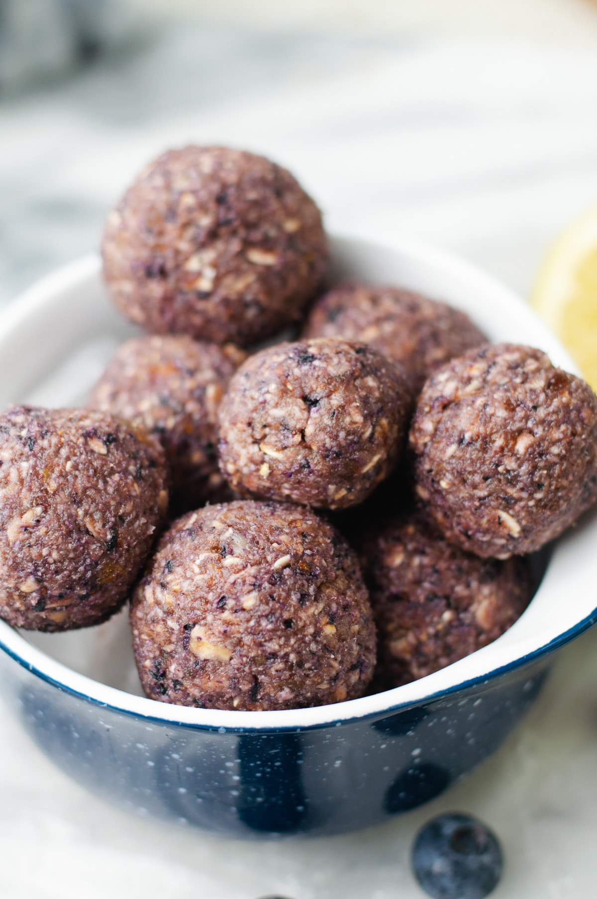

Home
Blueberry-Lemon Energy Balls

A quick and healthy treat made up of, you guessed it, blueberries and
lemons!
If you're looking for a midday pick-me-up, these irresistible
blueberry-lemon balls come together in minutes and make a perfect
on-the-go snack. Walnuts add a boost of plant-based protein and help keep
you energized, while a bit of maple syrup adds sweetness.
Ingredients
- 3/4 cup Walnuts
- 1/2 cup Pitted Dates
- 1/4 cup Dried Blueberries
- 3/4 cup Old-Fashioned Rolled Oats
- 2 Tbsp Pure Maple Syrup
- 1 Tsp Grated Lemon Zest
- 1 Tbsp Lemon Juice
Steps
-
Add walnuts, dates and blueberries to a food processor; process until
chopped and combined, 7 to 10 seconds. Add oats, maple syrup and lemon
juice. Continue processing until a smooth, thick paste forms, 20 to 30
seconds. Transfer the paste to a small bowl; add lemon zest and mix to
combine. With your hands, form and roll the mixture into 18 small balls.